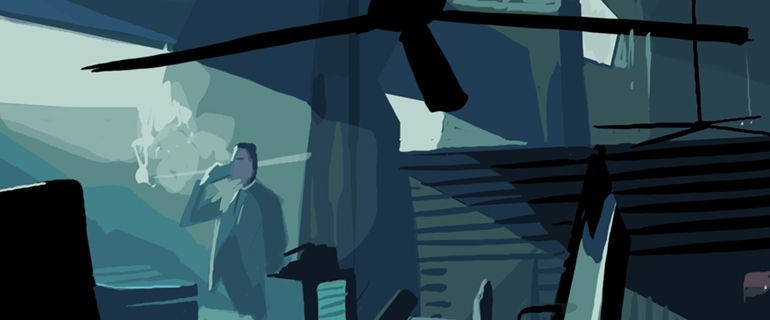

Technology & Society
The movie Blade Runner (1982) is loaded with contrasts and contradictions, and at the same exotic and typical of it's time. It's a full blown action film full of symbolism and ambiguity. It became instantly a cult movie and a visual icon for cyberpunks.
Two Versions #
After Ridley Scott released the new version, Director's Cut (1992), which in his opinion are much closer to his original intentions, it's now more interesting to examine some of the main elements of Blade Runner, and also how these elements are influenced by the seemingly minor differences between the two versions.
From now on I'll assume that the reader has seen at least one of the two versions, preferably both. If that's not the case, I'll recommend you to rent or buy the movie(s) before proceeding on. The two versions are named 'Director's Cut' and the Theatrical Version, the former will from now be referred to as DC, and the latter will be referred to as TV.
Let's first compare DC and TV. There are three main differences in the contents between them:
- Deckard's narration has been removed in DC.
- The Unicorn-Dream scene has been added to the DC.
- The "Happy-ending" from TV has been removed in DC.
Regarding the "happy ending", one must conclude with the fact that this ending was added to satisfy the production company, which believed the American audience would demand a happy ending. This scene contradicts both visually and stylistically with the rest of BR. (The scene was, by the way, cut from The Shining (Stanley Kubrick, 1980) and just pasted on to BR). The direct and inconclusive ending in DC is more in accordance with the original plot, theme and style of BR. The "happy-ending" in TV are therefore simply an element of noise (despite the quite excellent music).
The effects of the first two elements (listed above) are on the other hand dramatic and fundamental.
Is There a Main Character in Blade Runner? #
Deckard narration i TV has the following effects:
- Deckard is established as main character, and becomes the character the audience gets to know best.
- It gives the illusion that Deckard has full control over the situation. Since all that happens is part of Deckard's retrospect, the audience can then assume Deckard's survival and probably his victory in the battle.
On the contrarily, in DC Deckard is just one of the main characters, no different than Rachael, Roy and Pris. This give the relationship between Roy and Pris same emphasis and priority (well, almost) as between Deckard and Rachael. This introduces an uncertainty factor to the audience, and the question; "who are the bad guys, and good guys?" becomes more ambiguous. This, without doubt, was the director's initial intention. It becomes more evident that the audience's sympathy is divided among several parties.
The Unicorn, a Significant Symbol #
The Unicorn has a fundamental significance and multiple important functions in the film. Deckard has a dream about it, and Gaff (the "assisting" policeman to Deckard) makes a unicorn origami figure of the unicorn at the end (when Rachael and Deckard leave the apartment). Of the three main arguments of Deckard being a replicant, that one represents the strongest indication. (The two other arguments are the confusion of whom the 6th replicant is, and the fact that Roy knew Deckard name.) Gaff's origami figure suggests that Gaff knew of Deckard's memories. And therefore Deckard's memory has to be artificial. Gaff has by this time established a pattern of making origami figures that represents comments to or about Deckard. The unicorn was the third comment he makes.
I will not in this article examine all the pros and cons of whether Deckard's is a replicant or not, but I would like to ascertain that it's plausible that he is in the DC version, whilst in the TV version there's less indication of this. Review otherwise my closing comments in this article. I will return later to the other functions of the unicorn.
Themes, Conflicts and Excess #
I: Creation and the Creator
Blade Runner is a movie that will grow on you for each time you watch it - an open universe, a hologram where you'll discover new outlines and shadows each time. Let's review some of the major contours in the movie. BR is a techno-organic mosaic, produced visually such that the organically and the technological, the authentic and the artificial assume each others characters, mixed up together in multiple parallels and counterpoints in the course of events.
Such a course of events in Blade Runner is the creation's insurrection towards the creator, represented in the movie with the replicant Roy Batty's rebellion against Tyrell, his maker, the God of Biomechanics. While Batty becomes more and more human and develops emotions, Tyrell acts with a cold mechanical behavior. The rebellion leads to the death of the creator and this act proceeds with Roy's attainment of some kind of a human state. The artificial becomes human and destroys it's creator in the process. Are we presented here with a Nietzschistic allegory, that the human must destroy its God in order to evolve to and beyond the human state towards the godlike? In the ability to create there's also the power to destroy. By liberating oneself from, and if necessary destroy its creator, the creation can now become the creator. Only through God's death can the humans reclaim the qualities that were reserved for the God, which originally belonged to the humans, but were taken from them and alienated by a God. Accordingly, the replicant Roy has to capture the emotions and the humanity from the God of Biomechanics, Tyrell.
II: The Artificial and the Natural
Another course of events over the theme:"humanization of the non-human" is the relationship between Deckard and the replicant Rachael. It is common to conclude that Rachael became human when Deckard fell in love with her. However it is also correct to say that Rachael became human when she realized her affection for Deckard. It is of course very helpful if there exists a mutual affection, but it is through her own reasoning, her own choices and actions - e.g. when she saves Deckard's life by shooting Leon - that Rachael really becomes human. By transforming and mixing together the different pieces, memories and skills from various people, the ones she was implanted with, she'll take possession of them and use them as a basis to construct her own personal identity (here we anticipate postmodern approaches of identity, fractal subjects etc.). In the "piano-scene", Deckard confirms this by his comment to Rachael; "You play beautiful". But it's not Deckard's statement, but rather the underlying reality that it describes, that is the substratum for Rachael's growing identity.
III: Integration
Notice the theme-integration between Rachael's first realizations of love for Deckard - she's saving his life by shooting Leon - and Roy Batty's realizations of love for life in the end of the movie. While Rachael learns to love life through murder (because it is the first time she's making a personal obligation to protect a value she has chosen; Deckard), Roy learns to love life by accepting this own mortality, and this is expressed, contrary to Rachael's case, once Roy cease to commit murders. And hence the two contrary events unite, since both saves Deckard's life.
While the 21st century's Los Angles is cynical and corrupted, Rachael, on the other hand, is clean - a piece of untouched and original nature - and also the most advanced artificial being ever created. And not only that, but she's also original because she is artificial. This paradox is thematic related and reflected in Roy's paradox, that he is simultaneously a killing machine and a still growing being that fights, not only for "more time", but also for the opportunities this time will introduce; the possibility to gain a more human state - including human experiences, emotions, values and memories.
Destruction, Hope and Victory #
It is by no coincidence that Roy's first lines in the movie are: "Time...enough." There was enough time: Roy achieved his goal of become human. He is no looser, his death and the way he let it happen is his final victory. Therefore both Rachael's and Roy's path to humanity have the same course of evolution. The paths contradict and intensifies each other through it contradictory nature, and both Roy and Rachael achieved their human goals.
This is also expressed in the Unicorn. The Unicorn is pure and untouched (both in its traditional symbolic meaning and in its perception of living in unspoiled forests). At the same time the Unicorn is an artificial being - because it's merely a creation of fantasy, hence made by humans. It's untouched and artificial, as Rachael.
The Unicorn is also a non-living creature. Just like Rachael, until she saves Deckard's life, and hence gives herself a human life. Rachael doesn't only save Deckard's physical life, but she also makes him gain new values and emotions. It is now that Deckard has got something of personal importance worth fighting for.
It is by no coincidence that Deckard was dreaming of the Unicorn while Rachael was playing the Piano, nor a coincidence that the director made a new version to include this.
Roy's victory takes place in his last moments. Deckard's victory is that he becomes a human again; a great victory, whether he's a replicant or not. The complexity that revolves around Deckard's identity enriches Roy's victory and makes it seem even larger than if one of the alternatives (human or replicant) were excluded. Deckard's "resurrection" as a human through a gradual revival of his suppressed humanity is evolved along with hints of his non-humanity (as a replicant). A quite strong contra pointy effect - a man restores his human soul but might loose his physical humanity along the way. But Deckard gains his humanity in the end, as well as Rachael and Roy does.
Both Utopia and Dystrophy #
It is reason to question the extensive and superficial conception that Blade Runner is a completely dystrophic film. It is correct that the situations are gloomy and the environments are cold and polluted, and there is much violence and misery throughout the movie. However all three main characters (Deckard, Roy and Rachael) evolve during the movie and gain each a personal victory in the end; all this in spite of great difficulties both external and within each of them. A self possession is gained, and this makes life more precious and valuable, no matter the life span. Therefore one can say that there exists quite a bit of optimism in Blade Runner; humans, even in the worst of situations, can succeed and gain or restore their humanity.
However the movie is melancholic due to the surroundings and circumstances displayed. Another reason would be the short (Roy) or uncertain (Rachael and Deckard) longevity of that which is gained.
The expression and the title "Blade Runner" directly reflects the name of the elite police unit that "retires" rouge replicants. But the expression can also be perceived as an innuendo of the fragile balance between the human and the artificial; the organic and the technological, which is being displayed through the whole movie, and also is so perfectly formulated in Rachael's two questions to Deckard; "Have you ever retired a human by mistake?" and "You know that Voight-Kampf test of yours? Did you ever take that test yourself?" Where exactly does this boundary between the human and the artificial go? Has it been abolished?
The expression "Blade Runner" is also an interesting self reference, since the film itself balances on a thin line in its ambiguous presentation of the main(?) character Deckard's identity (human or replicant?). It's well worth noticing that the film would not have been so rich in content and meaning if one of the two possibilities were excluded. The doubt in Deckard's true identity will forever be with us; the openness of this question is an inevitable part of this movie's mythological identity, just like the doubt of whether there exists a distinction between humans and technology is an inevitable part of the identity of the cyberpunk's culture.
Written by Thomas Gramstad